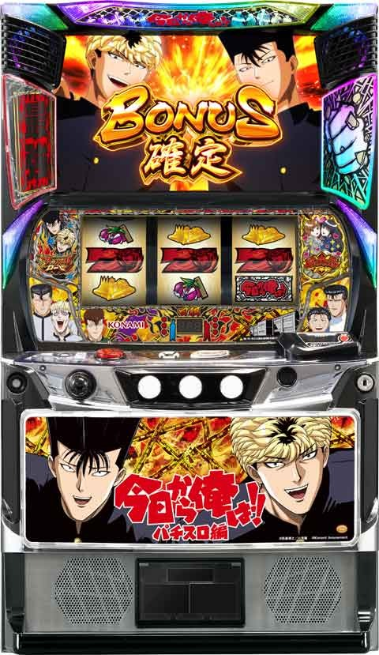
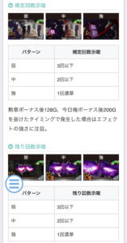
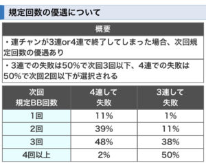

L今日から俺は

【天井情報】
1280G+α ボーナス当選
1000G以上で当選したボーナスは勲章ボーナス濃厚
リセット時 768G+α
今日俺ボーナス3連続当選で次回勲章ボーナス
【リセット判別】
コナミのためガックンしそう
【有利区間について】
不明
狙い目
【リセット狙い】
300Gから
【ボーナス間天井狙い】
720Gから
通常B濃厚 310Gから
【勲章ボーナススルー狙い】
REG3連続の台
200Gゾーン 140Gから250G付近まで
※当選すれば勲章ボーナスのため狙える
モードB以上濃厚 ボーナス当選まで
モード不明 380Gから
【ゾーン狙い】
400ゾーン狙い
380Gから450付近まで
200ゾーン狙い
230Gから250付近まで
※200ゾーンはほぼ狙えない
モード示唆見るために打つ価値あるかも？
【俺メーター狙い&スケジュール狙い】
4個 不問で5個まで
3個 ボーダーを少し下げる
2個 ボーダーそのまま
0.1個 20-30Gボーダー上げる
スケジュールが今日から無敵なら俺メーターのボーダーを1段階上げる。
【BB規定回数狙い】
規定回数に到達すると奇跡を信じる力ZONEに突入。
規定回数は1-5回。
BB後128G、RB後200G以内にBB当選で1回加算。
抜けた場合は規定回数再セットされる。
規定回数が少ない場合はボーダー下げれそう。


【有利区間切れ狙い】
不明
やめ時
示唆の有無に関係なく天国ゾーン消化が無難？
・終了時はコナミコマンドを入力。天国濃厚の場合は天国ゾーンまで。
「俺たちは無敵だー」は次回次次回も天国示唆。
・ツッパリロードからBIG当選時は次回天国濃厚のため天国ゾーンまで。
・ボーナス終了時BETでツッパリゾーン突入は天国濃厚のため天国ゾーンまで。
・通常時消化中に次回天国示唆は天国ゾーンまで。
今井シャッター 卑怯道、最強悪魔
アイキャッチ 紫
・奇跡を信じる力ZONE失敗時は次回天国モード
・BIGの規定枚数600枚選択後次回天国モード濃厚(獲得枚数は600-610枚くらい？)
その他
モード示唆、規定ゲーム数示唆
・ツッパリゾーン突入時に滞在ステージとキャラ矛盾で通常B以上濃厚
・ミニキャラで伊藤と犬時にベル成立で448G以内当選濃厚
・今井シャッター
正々堂々 通常B以上
馬鹿力、全力暴走 規定ゲーム数近い
・アイキャッチでピンクは128G以内濃厚？
・拳ランプ点灯で128G以内濃厚
参考元
基本情報
- メーカー: コナミアミューズメント
- 機械割: 97.9% 〜 113.0%
- 導入開始日: 2024年10月07日（月）
- ゲーム性概要: 通常時はレア役やゲーム数消化からボーナスを目指すゲーム性で、ボーナス後の天国期待度が約50%と高いところが大きなポイント。内部的に次次回のモードまで抽選される点も特徴で、モードを示唆する演出も数多く存在する。 ボーナスは勲章ボーナス（BIG）2種類と今日俺ボーナス（REG）の計3種類あり、獲得枚数はBIGが約500枚、REGが約104枚。BIG2種類の獲得枚数は同じだが、ツッパリロード（CZ）の当選率が異なる。 ボーナス中はボーナス1G連とCZ抽選していて、ボーナスとCZのループに天国を絡めて出玉を増やす流れ。最上位CZの最強ツッパリロードなら約84%でボーナスがループと超強力だ。


打ち方
打ち方・小役
打ち方（小役狙い）
「最初に狙う絵柄」

左リール枠上〜上段にBARを狙う（赤7狙いでもOK）。
「上段BAR停止時」
成立役…ハズレorリプレイorベルorチャンス目

「下段スイカ停止時」
成立役…スイカorチャンス目

中リールに青7を目安にスイカを狙う。右リールはフリー打ちでOKだ。
「チェリー停止時」
成立役…チェリーor複合役

チェリー＋下段にベルが揃うのが複合役。
「レア役の停止形」

変則押しはNG

通常時、押し順ナビなし時は左リール第1停止での消化を推奨する。
リール制御
左リール青7狙いの法則
「上段青7停止時」

リプレイ以上濃厚の出目。
解析情報通常時
小役関連
高確準備中・ボーナス当選率
| 役 | 当選率 |
|---|---|
| 複合役 | 約20% |
高確中・レア役のボーナス当選率
| 役 | 当選率 |
|---|---|
| チェリー | 約25% |
| スイカ | 約50% |
| チャンス目 | 約82% |
| 複合役 | 期待大 |
小役確率（設定1）
| 役 | 確率 |
|---|---|
| スイカ | 1/100.1 |
| チャンス目 | 1/199.8 |
| チェリー | 1/75.1 |
| 複合役 | 1/399.6 |
| レア役合算 | 約1/32 |
内部状態関連
内部状態概要
内部状態は通常・高確準備・高確の3種類があり、滞在状態に応じてレア役成立時のボーナス当選期待度が変化。レア役成立時に状態昇格が抽選されていて、スイカやチェリーは昇格期待度が高い。 モード不問で、300G〜400G付近は高確へ移行しやすいので、レア役でのボーナス当選にも期待できる。
内部状態昇格期待度（設定1）
| 役 | 期待度 |
|---|---|
| スイカ | 高 |
| チェリー | 高 |
| チャンス目 | 低 |
| 複合役 | 低 |
高確準備性能
| 項目 | 内容 |
|---|---|
| 移行契機 | 通常からの昇格時の一部、高確からの転落時 |
| 保証ゲーム数 | 最低20G |
高確から転落時は必ず高確準備へ移行（いきなり通常へ転落はしない）。
内部状態移行率
| 役 | 通常→高確準備 | 通常→高確 | 高確準備→高確 |
|---|---|---|---|
| チェリー | 約27% | 約1% | 約25% |
| スイカ | 約33% | 約1% | 約30% |
通常時の押し順ナビ→ベル揃い時・内部状態昇格率
| 内部状態 | 昇格率 |
|---|---|
| 通常→高確準備 | 100% |
| 高確準備→高確 | 100% |
通常時は押し順ナビ発生時にベルが揃えば内部状態が必ず1段階アップする。
モード
モード概要
通常時のモードは3種類で、ボーナス当選までのゾーンや天井が変化。初回のモード決定時に今回・次回・次次回までのモードを決定するので、通常時の演出などにも多彩なモード示唆が存在する。
モードの種類と天井ゲーム数
| モード | 特徴 | 最大天井 |
|---|---|---|
| 通常A | 1000G以降のボーナスは 勲章ボーナス濃厚 | 1280G＋α |
| 通常B | 448G以内のボーナス期待度約75% | 768G＋α |
| 天国 | ボーナス後の約50%で移行 | 128G＋α |
129〜256Gまでのトータルボーナス期待度は約33%。
ちなみに、300Gを超えた場合の期待値は、理論上はプラスとなる。
モードごとの特定ゲーム数までのボーナス当選期待度
| モード | 期待度 |
|---|---|
| 通常A | ● 513G以内のボーナス期待度 59.4% ● 768G以内のボーナス期待度 83.6% |
| 通常B | ● 320G以内のボーナス期待度 51.4% ● 512G以内のボーナス期待度 87.8% |
モードごとのゾーン表
| ゲーム数 | 通常A | 通常B | 天国 |
|---|---|---|---|
| 1～128G | ー | ー | 天井 |
| 129～192G | △ | ◯ | ー |
| 193～256G | ◯ | ◯ | ー |
| 257～384G | △ | ◯ | ー |
| 385～448G | ◯ | ◯ | ー |
| 449～576G | △ | ◯ | ー |
| 577～640G | ◯ | ◯ | ー |
| 641～768G | ◯ | 天井 | ー |
| 769～896G | △ | ー | ー |
| 897～960G | ◯ | ー | ー |
| 961～1024G | ◯ | ー | ー |
| 1025～1152G | ◯ | ー | ー |
| 1153～1280G | 天井 | ー | ー |
※期待度…△＜◯
滞在モードごとの特にボーナス期待度の高いゾーン
| ゲーム数 | 通常A | 通常B | 朝イチ |
|---|---|---|---|
| 1～128G | ー | ー | ◎ |
| 163～192G | ー | ◎ | ◎ |
| 225～256G | ◎ | ◎ | ◎ |
| 353～384G | ー | ◎ | ◎ |
| 417～448G | ◎ | ◎ | ◎ |
| 609～640G | ◎ | ◎ | ◎ |
| 737～768G | ◎ | ◎ | ◎ |
モード振り分け（設定1）
| モード | 振り分け |
|---|---|
| 通常A | 33.2% |
| 通常B | 16.8% |
| 天国 | 50.0% |
今日俺スケジュール＆俺メーター
今日俺スケジュール＆俺メーター概要

液晶右上のスケジュールは24Gごとに切り替わり、レア役成立時の俺メーター点灯の対応役が変化。当該スケジュールのほかに、2個先までのスケジュールが右側の？アイコンの色（保留）によって示唆されている。 今日俺スケジュールと成立役（レア役orリプレイ）を参照して、液晶左下のメーター点灯を抽選。 5個点灯すれば約25%でボーナス に当選する。設定変更後（1回目のボーナス当選まで）は俺メーターがの貯まりやすさが1.5倍高いので、早い俺メーター契機のボーナス当選にも期待できる。
スケジュールごとの対応役と レア役成立時の俺メーター点灯期待度
| スケジュール | チェリー | スイカ | チャンス 目 | 複合役 | リプレイ |
|---|---|---|---|---|---|
| 今日から真面目 | △ | △ | 〇 | 〇 | ー |
| 今日から金髪 | 〇 | △ | 〇 | ◎ | ー |
| 今日からトゲトゲ | △ | 〇 | 〇 | 〇 | ー |
| 今日からバカ番長 | △ | △ | ◎ | 〇 | ー |
| 今日からツッパリ | 〇 | 〇 | 〇 | ◎ | ー |
| 今日から悪魔 | 〇 | △ | ◎ | ◎ | ー |
| 今日からモテ期 | △ | 〇 | ◎ | 〇 | ー |
| 今日から最強 | 〇 | 〇 | ◎ | ◎ | ー |
| 今日から無敵 | 〇 | 〇 | ◎ | ◎ | 〇 |
※△…点灯抽選、◯…必ず点灯、◎…2個以上点灯
144G付近は今日から最強or今日から無敵が選ばれる （比率は1：1）ため、天国のゾーンを抜けても俺メーターの貯まり具合によっては続行をオススメ。ちなみに、今日から最強は約1/32、今日から無敵だと約1/6で俺メーターを獲得できる。
保留の色別・スケジュール示唆
| 色 | 示唆 |
|---|---|
| 青 | 今日から金髪以上 |
| 緑 | 今日からツッパリ以上 |
| 赤 | 今日から最強以上 |
俺メーター性能
| 項目 | 内容 |
|---|---|
| 点灯契機 | レア役成立時の抽選、 チャンス目・複合役は点灯濃厚 |
| 5個点灯時 | 約25%でボーナスに当選 |
メーター点灯個数ごとのボーナス当選期待度
| 点灯個数 | 期待度 |
|---|---|
| 1個 | 0.4% |
| 2個 | 0.8% |
| 3個 | 1.2% |
| 4個 | 2.0% |
| 5個 | 25.0% |
メーターが点灯するごとにボーナスが抽選されていて、MAXの5個点灯で約25%でボーナスに当選（5個点灯時はツッパリゾーンへ移行して当否を告知）。
トラブルメーカー
トラブルメーカー概要

通常時の押し順ナビ時に、トラブルメーカーの発生を抽選。獲得するアイテムによって、次のボーナスの種別やツッパリロードの突入期待度など、さまざまな示唆がおこなわれる。
トラブルメーカーが発生した場合、次回の天国モード期待度が約80%と高いため、ボーナス当選後は天国のゾーン（128G＋α）までの消化をオススメする。
カードの種類別・示唆内容
| カード | 示唆 |
|---|---|
| 今井＆谷川 | 次回のボーナスが勲章ボーナスかつ、 次回天国濃厚 |
| 伊藤＆京子 | 次回と次次回のボーナスが勲章ボーナス |
| 相良猛 | ボーナス終了後に 奇跡を信じる力ゾーン突入濃厚 |
| 最強コンビ!!! | ボーナス終了後、最強ツッパリロードに突入 |
| 三橋＆理子 | 次回、次次回、3回目のボーナスが勲章ボーナス |
| ボーナス | ボーナス |
［出現するカード］


上記のように、示唆内容はカードに表示。通常時ステージへ戻っても液晶左上に示唆内容が表示され続ける。
逆襲システム
逆襲システム概要
特定のゲーム数間に、規定の勲章ボーナス回数に当選すると上位ATをかけたCZ・奇跡を信じる力ゾーンへ突入する。規定回数は最大5回で、連チャンが有効となるのは勲章ボーナス後は128G以内、今日俺ボーナス後だと200G以内だ。
逆襲システム性能
| 項目 | 内容 |
|---|---|
| BIG規定回数 | 1～5回 |
| 連チャン有効ゲーム数 | 勲章ボーナス後128G、今日俺ボーナス後200G |
| その他 | 勲章ボーナス後128Gを抜けた場合、 次の 規定回数は前回以下の回数が選ばれる |
連チャン失敗後・勲章ボーナス連チャン規定回数振り分け
| 回数 | 3連して失敗後 | 4連して失敗後 |
|---|---|---|
| 1回 | 約1% | 約11% |
| 2回 | 約11% | 約39% |
| 3回 | 約38% | 約48% |
| 4～5回 | 約50% | 約2% |
規定ゲーム数（勲章ボーナス後128G、今日俺ボーナス後200G）内に勲章ボーナスが3〜4連して、奇跡を信じる力ゾーン非突入で規定ゲーム数を抜けた場合、次の規定回数の振り分けが優遇される。
解析情報ボーナス時
ボーナス共通
ボーナス比率
| ボーナス | 比率 |
|---|---|
| 勲章ボーナス | 約53% |
| 今日俺ボーナス | 約47% |
今日俺ボーナス3連後、4回目のボーナスは救済として必ず勲章ボーナスになる。
勲章ボーナス（BIG）
勲章ボーナス概要

ボーナス開始時に450枚・500枚・550枚・600枚の中から枚数を抽選で決定。消化中はリプレイやレア役成立時にツッパリロード突入を抽選する。ボーナス1G連抽選もアリ！
勲章ボーナス性能
| 項目 | 内容 |
|---|---|
| 獲得枚数 | 450枚/500枚/550枚/600枚 |
| 1Gあたりの純増 | 約6.0枚 |
| 消化中の抽選 | リプレイ・レア役でツッパリロードを抽選 ボーナス1G連抽選もアリ |
| ツッパリロード期待度 | 約40% （赤7揃い：約33%、青7揃い：約63%） |
「3種類の告知タイプ」

ボーナス開始時に告知タイプを選択可能。
［チャンス告知］

BARが揃えば成功！
［完全告知］

伊藤が開眼すれば成功！
［最終告知］

最終ゲームでおいしい料理を作れれば成功。料理のランクが高いほど期待度がアップする。
ツッパリロード当選率
| 役 | 赤7勲章ボーナス | 青7勲章ボーナス |
|---|---|---|
| リプレイ | 0.5% | 3.0% |
| スイカ | 5.0% | 15.0% |
| チェリー | 4.0% | 12.0% |
| チャンス目 | 30.0% | 60.0% |
| 複合役 | 80.0% | 大チャンス |
今日俺ボーナス（REG）
今日俺ボーナス概要
約104枚獲得可能。通常時に当選した場合は廃ビル編、（最強）ツッパリロード中に当選した場合は紹介編と見た目が異なる。 廃ビル編は成立役に応じてアイテムを獲得していき、液晶右下のメーターが貯まるほどツッパリロード期待度がアップする。
今日俺ボーナス性能
| 項目 | 内容 |
|---|---|
| 獲得枚数 | 約104枚 |
| 消化中の抽選 | 成立役に応じてアイテムを獲得し、 貯めたメーターに応じてツッパリロード抽選 |
| ツッパリロード期待度 | 約20% |
| その他 | ツッパリロード中に当選したREG終了後は 再びツッパリロードへ |
| その他 | 今日俺ボーナス3連後、4回目のボーナスは 勲章ボーナス濃厚 |
レア役成立時は次ゲームの保留昇格が抽選される。
「保留とアイテム」

液晶下部の保留に応じて、三橋（画面左のキャラ）が取り出すアイテムの種類を、成立役を参照して今井（画面右のキャラ）がアイテムを受け取れるかを抽選。受け取った場合、アイテムの種類でメーターが加算され、最終的なメーターでツッパリロードの当否をジャッジする。
保留の序列
| 保留 | 内容 |
|---|---|
| ビニール袋 | 低 |
| 紙袋 | ↓ |
| 風呂敷 | ↓ |
| カバン | 高 |
アイテムの序列
| アイテム | 内容 |
|---|---|
| 草 | 低 |
| たまごの殻 | ↓ |
| バナナの皮 | ↓ |
| 水 | ↓ |
| 缶詰 | ↓ |
| ガム | ↓ |
| ポテチ | ↓ |
| エナジードリンク | 高 |
「紹介編」

キャラ紹介に秘密が…？
ポイント獲得率
| 役 | 獲得率 |
|---|---|
| ベル | 約22% |
| リプレイ | 100% |
| レア役 | 100% |
アイテムごとの獲得ポイント
| アイテム | 獲得ポイント |
|---|---|
| 草 | 5pt以上 |
| たまごの殻 | ↓ |
| バナナの皮 | ↓ |
| 水 | ↓ |
| 缶詰 | ↓ |
| ガム | ↓ |
| ポテチ | 20pt以上 |
| エナジードリンク | ポイントMAX濃厚 |
※100ptがMAX
メーター色別のツッパリロード期待度
| 色 | 期待度 |
|---|---|
| 白 | 低 |
| 青 | 低 |
| 黄 | 中 |
| 緑 | 約50% |
| 赤 | 80%以上 |
レア役はポイント獲得に加え、次ゲームの保留昇格も抽選。 メーターがMAXに到達した後は、ボーナス1G連を抽選する。 紹介編はツッパリロード再突入濃厚なので、1G連抽選のみがおこなわれる。
ツッパリロード（CZ）
ツッパリロード概要

ボーナス中の抽選で獲得するCZ。10G＋α間にリプレイとレア役でレベルを上げるほど、ジャッジパートの期待度がアップするゲーム性だ。 ツッパリロード成功後は勲章ボーナスなら次回天国確定、今日俺ボーナスの場合はツッパリロードへ再突入する。
ツッパリロード性能
| 項目 | 内容 |
|---|---|
| 突入契機 | ボーナス中の抽選 |
| 継続ゲーム数 | 10G＋α消化後、ジャッジパート2G |
| 成功時の恩恵 | ボーナス |
| 成功時の恩恵 | 勲章ボーナス後は次回天国 今日俺ボーナス後はツッパリロード再突入 |
| 成功期待度 | 約50% |
| レア役＆リーチ目 合算 | 約1/25 |
「レベルアップパート（10G＋α）」

リプレイ・レア役のレベルアップ段階
| 役 | 内容 |
|---|---|
| リプレイ | 1段階以上 |
| チェリー・カバン | 2段階以上のチャンス |
| チャンス目・複合役 | 2段階以上アップ濃厚 |
液晶のオーラの色は、ナシ＜青＜緑＜赤＜虹の順にチャンス。10G消化後もリプレイやレア役を引いている間は継続する。1G目（タイトル表示ゲーム）で引いたリプレイやレア役でも、レベルアップ抽選は有効だ。
「ジャッジパート（2G）」

段階（オーラ色）ごとのボーナス期待度
| 段階（色） | 期待度 |
|---|---|
| 1段階（ナシ） | 低 |
| 2段階（青） | 低 |
| 3段階（緑） | 約50% |
| 4段階（赤） | 80%以上 |
| 5段階（虹） | 勲章ボーナス濃厚 |
アップさせたレベルをもとに成否をジャッジ。ジャッジパート中にレア役やリーチ目が成立した場合はボーナス確定となる。
奇跡を信じる力ゾーン（CZ）
奇跡を信じる力ゾーン概要

「最強ツッパリロード」突入をかけた特殊なCZで、12G＋α間、毎ゲーム成功を抽選。失敗しても天国へ移行する。
奇跡を信じる力ゾーン性能
| 項目 | 内容 |
|---|---|
| 継続ゲーム数 | 12G＋α |
| 成功時の恩恵 | エピソードボーナス後、最強ツッパリロードへ |
| 成功期待度 | 約40% |
| その他 | 失敗後は天国へ移行 |
奇跡を信じる力ゾーン突入契機
| No. | 契機 |
|---|---|
| 1 | 規定のBIG連チャン回数到達 |
| 2 | トラブルメーカーでアイテム獲得 |
| 3 | 今日俺ボーナス終了時の一部 |
| 4 | 勲章ボーナス終了時の一部 |
成功時の恩恵
| No. | 恩恵 |
|---|---|
| 1 | エピソードボーナス（450～600枚獲得） |
| 2 | 最強ツッパリロード突入 |
「通常パート」

相良の気づき発生であおりパートへ移行。
「あおりパート」

伊藤が登場すれば成功。あおりパート中はゲーム数の減算がストップする。
最強ツッパリロード当選率
| 役 | 当選率 |
|---|---|
| 下記以外 | 約1% |
| リプレイ | 約15% |
| スイカ | 約40% |
| チェリー | 約33% |
| チャンス目 | 約75% |
| 複合役 | 大チャンス |
最強ツッパリロード
最強ツッパリロード概要

ループ率約84%を誇る連チャンゾーン。12G＋α間、毎ゲームボーナス抽選がおこなわれる。
最強ツッパリロード性能
| 項目 | 内容 |
|---|---|
| 継続ゲーム数 | 12G＋α |
| 成功時の恩恵 | ボーナス |
| 成功期待度 | 約84% |
| その他 | 終了しても次回ツッパリロード当選時の 約25%で最強ツッパリロードへ復帰 |
最強ツッパリロード終了後、次回ツッパリロードまで打った場合の機械割は100%オーバーだ。
最強ツッパリロード突入契機
| No. | 契機 |
|---|---|
| 1 | 奇跡を信じる力ゾーン成功 |
| 2 | トラブルメーカーでアイテム獲得 |
| 3 | 今日俺ボーナス終了時の一部 |
| 4 | 勲章ボーナス終了時の一部 |
ボーナス当選率
| 役 | 当選率 |
|---|---|
| 下記以外 | 約3% |
| リプレイ | 約33% |
| スイカ | 約70% |
| チェリー | 約60% |
| チャンス目 | 約85% |
| 複合役 | 大チャンス |
演出情報
通常時
ステージ・示唆内容
| ステージ | 示唆 |
|---|---|
| 軟葉高校/市街地 | デフォルト |
| 屋上 | 高確示唆 |
| 繁華街 | 高確準備濃厚 |
| コミック | ボーナスの大チャンス |
| スペシャル | 本前兆濃厚 |
［軟葉高校］

［屋上］

［繁華街］

［コミック］

［スペシャル］

モード示唆パターン
| 演出 | 内容 |
|---|---|
| ツッパリゾーン関連 | ● 滞在ステージと突入画面のキャラが矛盾すれば本前兆期待度アップかつ、 通常B以上濃厚 ● ボーナス終了後のBETで突入すれば 通常B以上濃厚 かつ 天国期待度約80% 。通常Bだった場合、480G以内にボーナス当選 |
| アイキャッチ | ● パターンでモードや規定ゲーム数を示唆 |
| 拳ランプ | ● 点灯すればボーナスが近い |
| 今井シャッター演出 | ● 表示される文字でモードや規定ゲーム数を示唆 |
| 通常時のミニキャラ | ● パターンでモードや規定ゲーム数を示唆 |
アイキャッチの示唆内容
| アイキャッチ | 示唆 |
|---|---|
| 緑 | 通常B以上滞在濃厚 |
| 赤 | 発生から256G以内にボーナス当選 |
| 炎 | 天国滞在濃厚 |
| 紫 | 次回天国濃厚 |
| ピンク | 発生から128G以内にボーナス当選 |
ミニキャラ演出の示唆内容
| 演出 | パターン | 示唆 |
|---|---|---|
| 不良追いかけで三橋登場 | 通常B以上に期待 | |
| ここ掘れわんわん 三橋横取り バドミントン | 押し順ベル | 448G以内に本前兆スタート |
| ここ掘れわんわん 三橋横取り バドミントン | チェリー | 256G以内に本前兆スタート |
| ここ掘れわんわん 三橋横取り バドミントン | チャンス目 | 128G以内に本前兆スタート |
| 理子台車 | 通常B以上濃厚 | |
| ベンチ | 花吹雪：少 | 次回or次次回が天国 |
| ベンチ | 花吹雪：中 | 次回＆次次回が天国 |
| ベンチ | 花吹雪：多 | 次回＆次次回が天国かつ本前兆 |
ミニキャラ演出・通過キャラごとの示唆内容
| キャラ | 示唆 |
|---|---|
| 犬 | ● 右から通過：第2停止時→通常B以上期待度アップ、第3停止時→通常B以上 ● 左から通過：本前兆濃厚 |
| 三橋 | ● 右から通過：市街地ステージなら通常B以上 ● 左から通過：本前兆濃厚 |
| 伊藤 | ● 右から通過：軟葉高校ステージなら通常B以上 ● 左から通過：本前兆濃厚 |
| 理子 | ● 右から通過：前兆中以外なら256G以内にボーナス当選 ● 左から通過：本前兆濃厚 |
| 京子 | ● 右から通過：前兆中以外なら256G以内にボーナス当選 ● 左から通過：本前兆濃厚 |
| 今井 | ● 右から通過：高確滞在示唆 ● 左から通過：本前兆濃厚 |
| 智司 | ● 右から通過：通常B以上示唆 ● 左から通過：通常B以上濃厚 |
| 相良 | ● 右から通過：奇跡を信じる力ゾーンまで残り勲章ボーナス4回以下 ● 左から通過：奇跡を信じる力ゾーンまで残り勲章ボーナス3回以下 |
| 三橋・理子 | ● 右から通過：本前兆期待度約50% ● 左から通過：本前兆濃厚 |
| 三橋・今井 | ● 右から通過：本前兆濃厚 ● 左から通過：128G以内にボーナス当選 |
| 伊藤・京子 | ● 右から通過：本前兆期待度約50% ● 左から通過：本前兆濃厚 |
| 今井・谷川 | ● 右から通過：高確濃厚 ● 左から通過：本前兆濃厚 |
| 伊藤・智司 | ● 右から通過：天国濃厚 ● 左から通過：本前兆濃厚 |
| 智司・相良 | ● 右から通過：本前兆かつ、勲章ボーナス濃厚 ● 左から通過：本前兆かつ、次次回まで勲章ボーナス濃厚 |
| 三橋・相良 | ● パターン不問：本前兆＆勲章ボーナス濃厚 |
| 智司・相良・ 三橋・伊藤 | ● パターン不問：本前兆かつ、次回天国濃厚 |
今井シャッター演出・示唆内容
| 文字 | 示唆 |
|---|---|
| 卑怯道 | 次回or次次回のどちらかが天国 |
| 最強悪魔 | 次回と次次回の両方が天国 |
| 頑固 | 通常B期待度アップ |
| 正々堂々 | 通常B以上 |
| 馬鹿力 | 発生から256G以内にボーナス当選 |
| 全力暴走 | 発生から128G以内にボーナス当選 |
［ツッパリゾーン突入画面：三橋］

［ツッパリゾーン突入画面：伊藤］

軟葉高校滞在時は三橋の、その他のステージ滞在時は伊藤の突入画面が表示。矛盾すれば前兆期待度アップかつ、通常B以上濃厚となる。
［アイキャッチ：ピンク］

［拳ランプ］

拳ランプ点灯の可能性がある演出・タイミング
| No. | 演出・タイミング |
|---|---|
| 1 | ツッパリロードで勲章ボーナス当選時 |
| 2 | ツッパリロード2G目に「激怒編」発生時 |
| 3 | 通常時のステージチェンジ時 |
| 4 | ツッパリゾーンの三橋殴り演出発生時 |
| 5 | ミニキャラ演出発生時 |
［ここ掘れわんわん］

［三橋横取り］

［バドミントン］

［理子台車］

［ベンチ花吹雪：少］

［ベンチ花吹雪：中］

［ベンチ花吹雪：多］

［今井シャッター演出：卑怯道］

［今井シャッター演出：馬鹿力］

逆襲システム規定回数示唆演出
| パターン | 規定回数示唆 | 残り回数示唆 |
|---|---|---|
| 弱 | 規定3回以下 | 残り3回以下 |
| 中 | 規定2回以下 | 残り2回以下 |
| 強 | 規定1回濃厚 | 残り1回濃厚 |
規定回数示唆は勲章ボーナス後128G、今日俺ボーナス後200Gを抜けたタイミングで発生する可能性あり。残り回数示唆は通常時ならいつでも発生する可能性がある。 連チャンが有効のゲーム数（勲章ボーナス後128G、今日俺ボーナス後200G）は液晶右側のランプが点滅しているが、不規則な青点滅に変化したら規定回数まで残り1回が濃厚だ。
［規定回数示唆：弱］

［規定回数示唆：中］

［規定回数示唆：強］

［残り回数示唆：弱］

［残り回数示唆：中］

［残り回数示唆：強］

俺メーター系の演出
「炎エフェクトの有無」

俺メーター5個点灯後、液晶周囲に炎エフェクトが発生すると本前兆期待度がアップする（画像は炎エフェクトなしパターン）。
連続演出の法則
| 連続演出 | 内容 |
|---|---|
| 落とし穴から抜け出せ | 通常B以上滞在時に発生しやすい |
| 2Gで終了→ツッパリゾーン移行 | 本前兆期待度50%以上 |
| クローバー柄タイトル | 勲章ボーナスかつ次回天国濃厚 |
［落とし穴から抜け出せ］

［クローバー柄タイトル］

コミックルーレット演出

コミックルーレット演出・示唆内容
| キャラ | 白黒 | カラー |
|---|---|---|
| 今井 | 押し順ベル・ハズレ対応 | 各キャラの対応役示唆 ＋256G以内にボーナス当選 |
| 伊藤 | リプレイ対応 | 各キャラの対応役示唆 ＋256G以内にボーナス当選 |
| 三橋 | スイカ・チェリー対応 | 各キャラの対応役示唆 ＋256G以内にボーナス当選 |
| 理子 | チャンス目・複合役対応 | 各キャラの対応役示唆 ＋256G以内にボーナス当選 |
ルーレットでキャラを選択後、そのキャラのコマが白黒orカラーで表示される。キャラと対応役が矛盾した場合は本前兆濃厚だ。
［白黒］

［カラー］

前兆
ツッパリゾーン

レア役や規定ゲーム数消化で突入する前兆ステージ。ラストの対決に勝利すればボーナス確定だ。
演出法則
| 演出 | パターン |
|---|---|
| タイトルコール | 理子や京子パターンなら期待度約70% |
| ミニキャラ演出 | 第3停止後にミニキャラが通過すれば大チャンス |
| 夜ver. | 期待度アップ |
対決発展ゲーム数ごとの本前兆期待度
| ゲーム数 | 期待度 |
|---|---|
| 8G以下 | 大チャンス |
| 9G | 約63% |
| 10G | 約50% |
| 11G | 大チャンス |
［夜ver.］

［ミニキャラ通過］

［今井系対決］連続演出期待度序列
| 演出 | 序列 |
|---|---|
| 今井勝俊VS相良猛 | 低 |
| 今井・男道 | 高 |
［三橋・伊藤系対決］連続演出期待度序列
| 演出 | 序列 |
|---|---|
| VS片桐 | 低 |
| VS相良 | ↓ |
| VS中野 | 高 |
［今井勝俊VS相良猛］

［今井・男道］

［VS片桐］

［VS相良］

［VS中野］

ボーナス
勲章ボーナスの枚数上乗せ告知
勲章ボーナスの枚数は当選時に決まっていて（450〜600枚）、消化中に上乗せされることはない。完全告知を選んだ場合、ボーナス開始時に告知、チャンス告知と最終告知はボーナス中に上乗せの形で枚数が告知される。
「チャンス告知」


三橋がゴミ箱に潰されると激怒パートへ移行。最終的にモンタージュが完成すると枚数上乗せとなる。 上乗せが発生するごとに、液晶右下に今日俺スタンプが押されていく。
「完全告知」

ボーナス当選時に枚数が告知されるので、もっともわかりやすい。
「最終告知」

ボーナス終盤のルーレットで上乗せを告知。
ボーナス準備中
「勲章ボーナスの1確＆2確目」

ボーナス準備画面でボーナス絵柄を狙う際、中リールに赤7のサンド目をビタ押しして、止まれば勲章ボーナス1確。順押しで狙った場合も中リールに赤7のサンド目が停止すれば勲章ボーナス濃厚で、こちらはビタ押しである必要はない。
演出ごとのチャンスパターン
| 演出 | パターン |
|---|---|
| ゴミ箱 | ゴミ箱［大］ |
| 停電演出 | 発生した時点でチャンス |
| ロゴ系 | チャンスロゴが3回以上出現 |
| ロゴ系 | 俺アツロゴ出現 |
| 伊藤演出 | レア役以外で発生 |
| 三橋激怒 | 赤背景 |
| レバー叩き | 今井がレバーを叩いて鉄骨落下 |
| レバー叩き | 谷川がレバーを叩いてゴミ箱落下 |
| ナビ系 | 色と成立役の矛盾 |
| ナビ系 | Wナビで両方同じ |
| 今日俺スタンプ | 三橋以外のスタンプなら上乗せが残っているかも |
［ゴミ箱［大］］

［停電演出］

［チャンスロゴ］

［伊藤演出］

［三橋激怒：赤背景］

［レバー叩き：今井］

［レバー叩き：谷川］

［Wナビで両方同じ］

［今日俺スタンプ］ ボーナス枚数上乗せ告知が発生するたびに、液晶右下にスタンプが押されていく。三橋のスタンプ以外なら、まだ上乗せが残っている可能性が高い。
演出ごとのチャンスパターン
| 演出 | パターン |
|---|---|
| 伊藤ステージ | 伊藤の顔がアップならチャンス |
| 伊藤ステージ | 5G滞在すれば大チャンス（4Gがデフォルト） |
| 伊藤ステージ | 伊藤のオーラの色と小役矛盾やオーラ大発生でチャンス |
［伊藤ステージ：デフォルト］

［伊藤ステージ：顔がアップ］

完全告知中は、基本的に伊藤ステージへ移行してツッパリロードの当否を告知。リプレイ契機で顔がアップの伊藤ステージへ移行すれば大チャンスだ。
［オーラ大］

チャンス告知中のモード示唆
チャンス告知中は激怒パートへ移行して上乗せを告知するが、何回目で最初の上乗せが発生したかによって、モードを示唆する。
最初の上乗せ告知タイミング別・示唆内容
| タイミング | 示唆 |
|---|---|
| 1回目 | 天国or奇跡を信じる力ゾーン |
| 2回目 | !? |
| 3回目 | 通常B以上期待度アップ |
| 4回目 | デフォルト |
| 5回目 | 通常B以上濃厚 |
| 6回目 | !? |
| 7回目 | 通常B以上濃厚 |
完全告知中・モード示唆
| 演出 | 示唆 |
|---|---|
| ダチョウの卵 | 次回通常B以上濃厚 |
［ダチョウの卵］

CZ
ツッパリロード中の勲章ボーナス濃厚パターン
| No. | パターン |
|---|---|
| 1 | 特殊タイトル |
| 2 | 中リール狙え成功 |
| 3 | 5段階（虹オーラ）まで昇格 |
| 4 | 勲章ボーナス濃厚のリーチ目が停止 |
演出法則
| 演出 | 示唆 |
|---|---|
| 中リール狙えあおり | リプレイ成立期待度アップ |
［特殊タイトル］

［中リール狙え］

［虹オーラ］

［中リール狙えあおり］

終了画面
コナミコマンドによる示唆
ボーナス終了画面やCZ終了画面でコナミコマンドを入力すると、モードや逆襲システム（規定勲章ボーナス回数）を示唆するボイスが発生する。
コナミコマンド…上→上→下→下→左→右→左→右 →PUSH
ボーナス終了画面のボイス・示唆内容
| ボイス | 示唆 |
|---|---|
| オマエ、 けっこうカッコイーぜ。 | デフォルト |
| 信じなさい！ されば道は開かれる！ | 通常B期待度アップ |
| 帰ると見せかけて キィーーック | 天国濃厚 |
| 俺たちは強い！！ | 天国濃厚 |
| 俺たちは無敵だ― | 天国濃厚かつ、 次回と次次回の天国期待度約80% |
| やっぱり危ないわよ、 アイツ普通じゃないもの | 勲章ボーナス規定回数が残り2回 |
| 大声、出すわよ。 | 勲章ボーナス規定回数が残り1回 |
| 見せてくれよ、 オメーの無敵ぶり | 勲章ボーナス規定回数到達濃厚 |
CZ終了画面のボイス・示唆内容
| ボイス | 示唆 |
|---|---|
| 三橋「男にはよ、多少敵がいたほうが いいんじゃねーのか？」 | デフォルト |
| 伊藤「けどよ三橋、悪い奴がたまにいいことすると…イキナリ評判あがるぜ！！」 | 次々回までに通常B以上あり |
| 今井「あわてんなよ。俺は別に夢を諦めちゃいねーぜ。」 | 次々回までに天国あり |
| 谷川「やってみろよ。こっちだってただじゃやられねーーぞ。なんだっらァーやってみろよーーー！」 | ２回連続通常B以上 |
| 京子「そんじゃ明日が私の誕生日でいーや。」 | 2回連続通常B以上 天国期待度約80% |
| 理子「だって三ちゃん優しいんだもん。文句なんか言えないナ。」 | 2回連続天国かつ 3回目の天国期待度約80％ |
※CZ…ツッパリロード、奇跡を信じる力ゾーン、最強ツッパリロード
通常時
高確準備示唆演出
| 演出 | パターン |
|---|---|
| ミニキャラ | 今井が通過 |
| セリフ演出 | 理子のお父さん（アカサカテツオ）出現 |
| 進路表演出 | 三橋以外の進路表 |
| ステージ | 屋上ステージ |
［進路表演出］